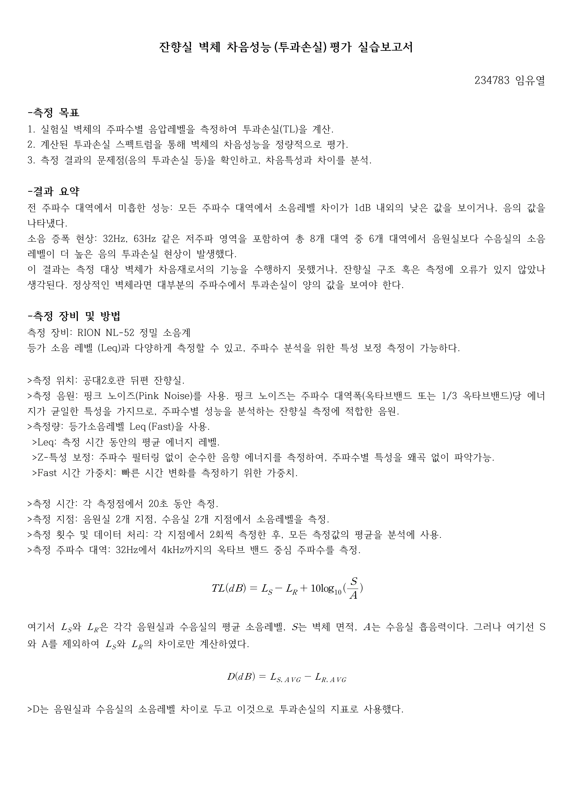

SOUND LEVEL DIFFERENCE
벽을 사이에 두고 소리를 읽다
음원실과 수음실에서 핑크노이즈의 레벨을 측정하고 차이를 분석했습니다. 예상과 다른 값에서 출발해 측정 조건과 해석의 한계를 검토했습니다.
- YEAR / SEMESTER
- 3학년 2학기 · 2025
- COURSE
- 건축음향
- CONTRIBUTION
- 측정·실습 보고서
- SITE / SUBJECT
- 음원실과 수음실의 음압레벨

THE IDEA
생각의 출발점
벽체 양쪽 공간에서 32 Hz–4 kHz 대역의 음압레벨을 비교했습니다. 각 실 두 지점에서 20초씩 두 번 측정한 결과를 평균하고, 음원실과 수음실의 레벨 차이 D를 계산했습니다.
- 01
측정과 평균화
음원실·수음실의 위치별 데이터를 모아 대역별 대표값을 구하고, D = Ls − Lr로 정리했습니다.
- 02
예상과 다른 값의 의미
8개 대역 중 6개에서 음압레벨 차이가 음수였습니다. 이를 곧바로 벽체의 고유 차음 성능으로 판단하기보다 배경소음, 측로 전달과 음원 안정성의 영향을 검토했습니다.
- 03
결과보다 중요한 측정 조건
흡음면적과 시료 면적 보정을 적용하지 않은 실습이므로, 표준 투과손실과 단순 레벨 차이를 구분했습니다. 재측정에서는 신호 대비 배경소음과 측정 조건 관리가 중요합니다.
READING THE RESULTS
대역별 음압레벨 차이
| 주파수 | D = Ls − Lr |
|---|---|
| 32 Hz | −4.70 dB |
| 63 Hz | −2.65 dB |
| 125 Hz | 0.00 dB |
| 250 Hz | 0.25 dB |
| 500 Hz | −0.80 dB |
| 1,000 Hz | −0.95 dB |
| 2,000 Hz | −0.90 dB |
| 4,000 Hz | −2.10 dB |
보고서의 평균 레벨에서 계산한 값. 음수 결과는 실험 조건을 재검토하는 단서로 해석했습니다.
PROCESS & OUTCOME
과정과 결과
사진을 누르면 크게 볼 수 있습니다.